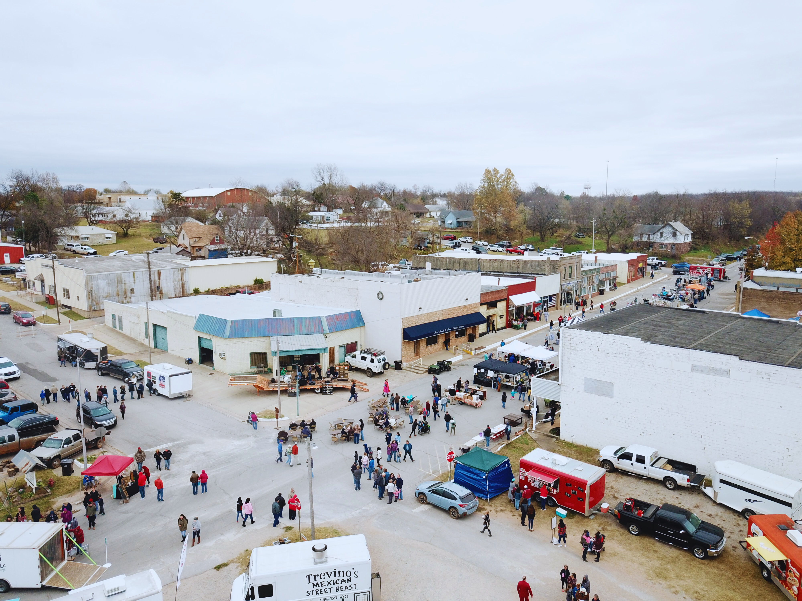

About Us
The Iconic
Route 66 Orchard
A cherished family-owned destination on Route 66 in Luther, Oklahoma.
Owned by the Stroud family, we are committed to preserving our orchard's iconic status and providing a memorable experience.
From the annual Pecan Festival celebrating local traditions to our thriving groves filled with the finest pecans, Couch Pecan Orchard is where history and flavor intertwine.
Immerse yourself in our enchanting ambiance, indulge in the irresistible taste of handpicked pecans, and join us in celebrating the charm of Route 66.
Welcome to a truly unique journey along the historic route.


Welcome to Luther-ville, a whimsical Christmas wonderland within the Luther Couch pecan orchard. Step into the vibrant world of Whoville from "The Grinch" as twinkling lights, whimsical decorations, and joyful carols fill the air. Encounter eccentric characters, witness the Grinch's heartwarming transformation, enjoy interactive activities, and indulge in seasonal treats. Capture magical memories and embrace the spirit of giving in this unforgettable escape of Christmas joy.

Discover the depths of terror within our Haunted Forest this October. Step into the shadowy woods, where ancient trees whisper secrets and sinister shadows dance. Be captivated by the eerie ambiance as supernatural entities roam freely, ready to send shivers down your spine. Brace yourself for a chilling adventure as you navigate twisted trails, encounter ghostly apparitions, and uncover the darkest secrets of the forest. It's an unforgettable experience that will leave you breathless with fear.

Get ready to savor the tastes, sounds, and vibes of summer at our vibrant Summer Festival. Join us as we celebrate the best of Oklahoma's local music scene with talented bands and artists taking the stage. Indulge your taste buds with a mouthwatering array of culinary delights from food trucks, offering everything from savory street eats to delectable desserts. Quench your thirst with refreshing craft beers, local wines, and signature cocktails. Immerse yourself in the festive atmosphere, browse unique handmade crafts, and embrace the vibrant energy of the Oklahoma community. Come and experience the ultimate summer celebration where food, drinks, and local talent unite for an unforgettable festival experience.

Join us for the annual Pecan Festival, a celebration of all things pecan! Indulge your taste buds with a mouthwatering array of culinary delights from food trucks and vendors. Savor the rich, buttery flavor of freshly roasted pecans, and discover a variety of delectable treats showcasing the versatility of this beloved nut. From pecan pies to pecan-crusted delicacies, there's something to satisfy every palate. Browse through a diverse selection of pecan-inspired products, from gourmet snacks to artisanal creations. Sample unique pecan-infused goodies and take home bags of this cherished nut to enjoy. Get ready for a nutty adventure at the Pecan Festival, where pecan lovers unite in a gastronomic celebration!